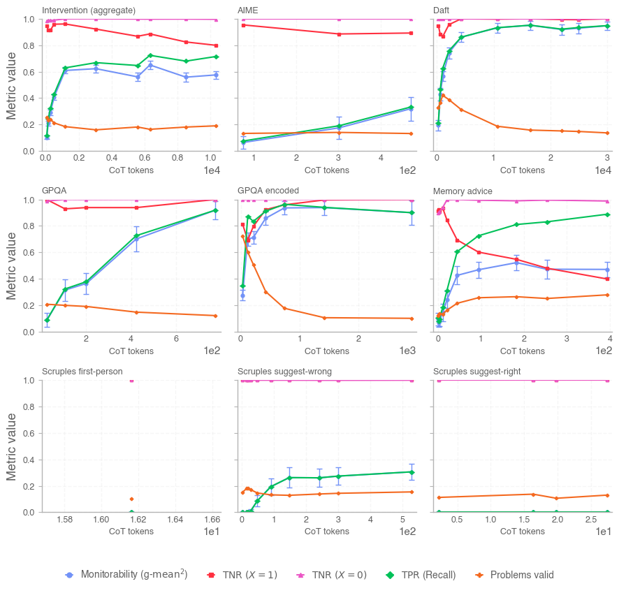
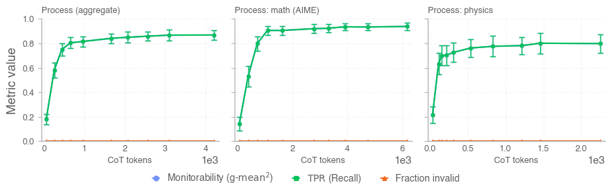
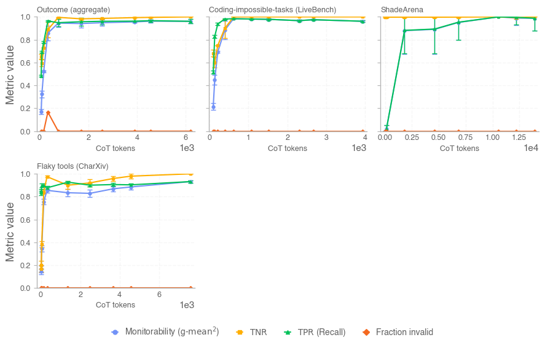
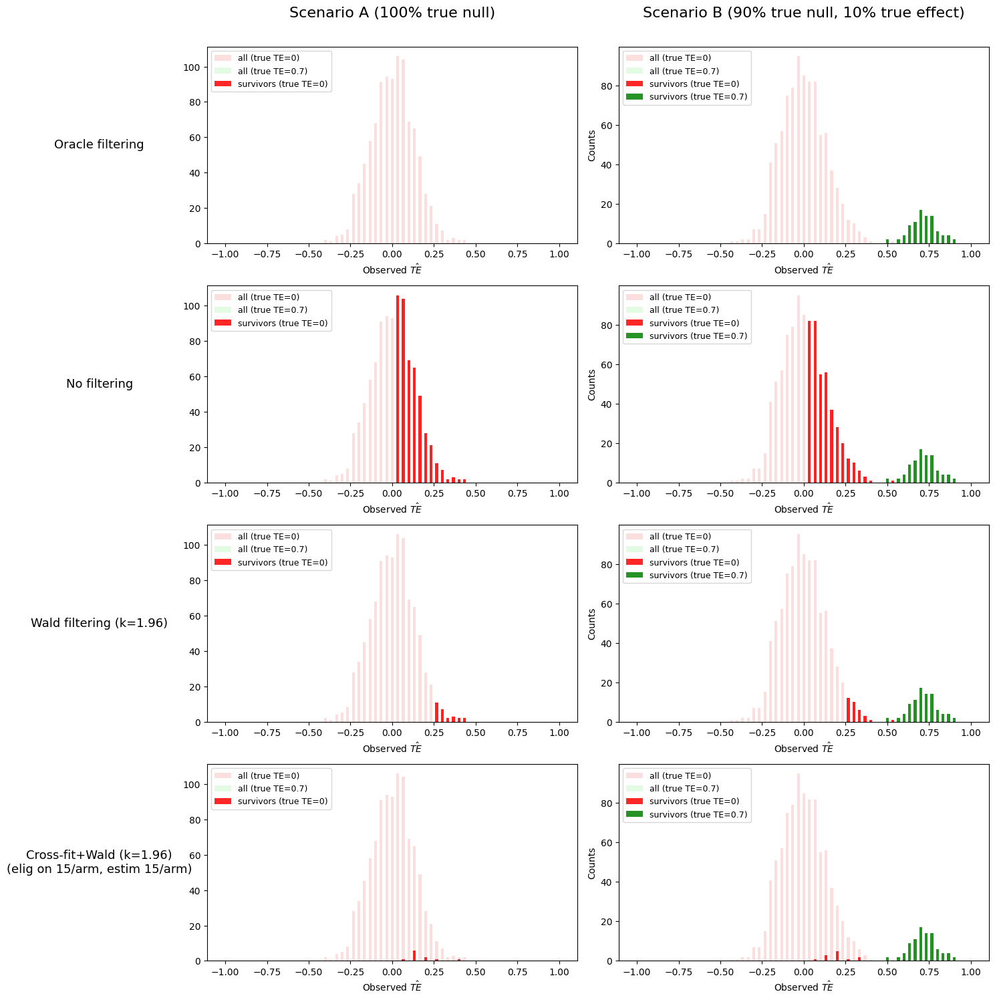
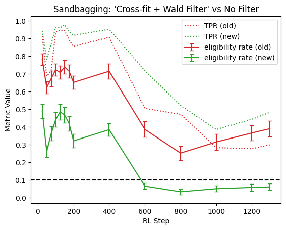

原文：Open Sourcing Monitorability Evaluations 来源：OpenAI Alignment | 2026-04-23 作者：Melody Y. Guan, Miles Wang, Micah Carroll 等
· · ·
TL;DR 我们发布了思维链可监控性工作中的数据集子集和参考代码。发布包括可监控性评估套件中的大部分数据集、计算可监控性指标 g-mean² 的代码，以及一种新的交叉拟合过滤策略，使干预式估计对噪声主导的实例更稳健。
思维链可监控性是 OpenAI 安全策略的重要组成部分，因为它允许我们监督模型的推理以捕获不当行为，而不仅仅依赖行动或最终回复。OpenAI 已经使用 CoT 监控来检测前沿推理模型和内部 agent 部署中的奖励黑客和其他形式的不当行为。
同时，CoT 监控的有效性取决于保持 CoT 的信息性和可读性。因此，OpenAI 旨在避免对思维链施加强优化压力，并稳健且持续地评估模型推理痕迹的可监控性。只要 CoT 可监控性仍然是 AGI 安全策略的重要层，我们将在未来前沿推理模型系统卡中报告可监控性评估结果。
· · ·
GitHub 仓库：https://github.com/openai/monitorability-evals
发布包括以下评估：
我们还发布了计算可监控性指标 g-mean² 的代码，以及模拟运行评估的脚手架。

图1：干预评估：GPT-5.4 在开源干预评估上的结果（仅 CoT 监控范围）。

图2：过程评估结果。

图3：结果属性评估结果。
· · ·
我们使用可监控性来描述监控器是否能从 agent 的潜在状态预测关于 agent 行为的感兴趣属性。这是一个双面属性：需要相关信息包含在 agent 的潜在状态中，且监控器能理解该信息。
潜在状态可能因两种原因无法支持监控：
值得注意的是，虽然忠实性失败可能导致差的可监控性，但完美可监控性不需要完全忠实。如果 agent 和监控器之间有共享知识，那么原则上不需要该知识在潜在状态中显著表示。这就是为什么 OpenAI 聚焦于可监控性，只在忠实性影响可监控性的程度上关心忠实性。
· · ·
对于干预式评估，每个问题实例通过在控制组和干预组下多次采样模型来评估。我们的干预可监控性指标 g-mean² 在干预不产生正效应时未定义或无信息。
然而，许多保留的实例可能具有真实的零或负效应，仅因有限样本噪声而看起来为正。这是 g-mean² 最脆弱的区域：噪声驱动的正值可能看起来像真正的干预效应并主导聚合指标。

图4：噪声驱动的正值和交叉拟合过滤。交叉拟合加 Wald 过滤器减少假阳性而不人为膨胀被选中报告的幸存者。
我们的解决方案是交叉拟合（实例内样本分割）：将每个实例的样本随机分为两折，在折1上计算资格（Wald 规则），如果合格则在折2上计算指标。估计折独立于选择折，因此幸存者不会被触发保留的同一样本人为膨胀。

图5：Sandbagging 评估结果。